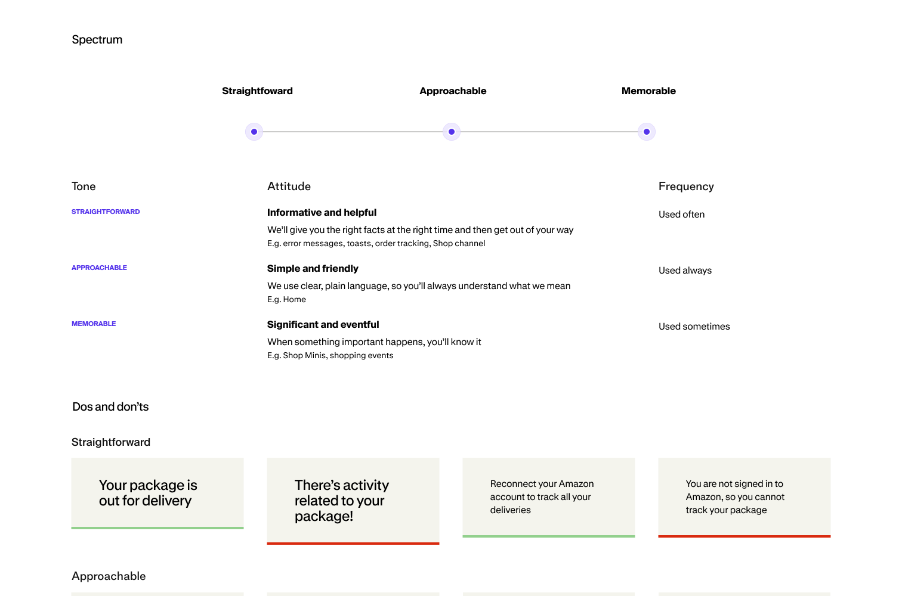
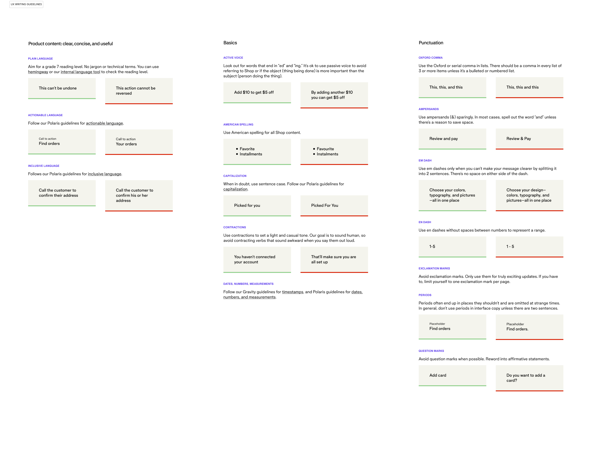
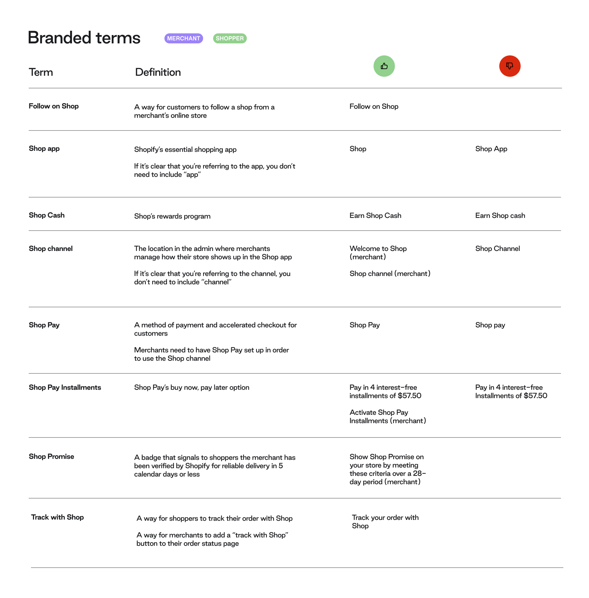
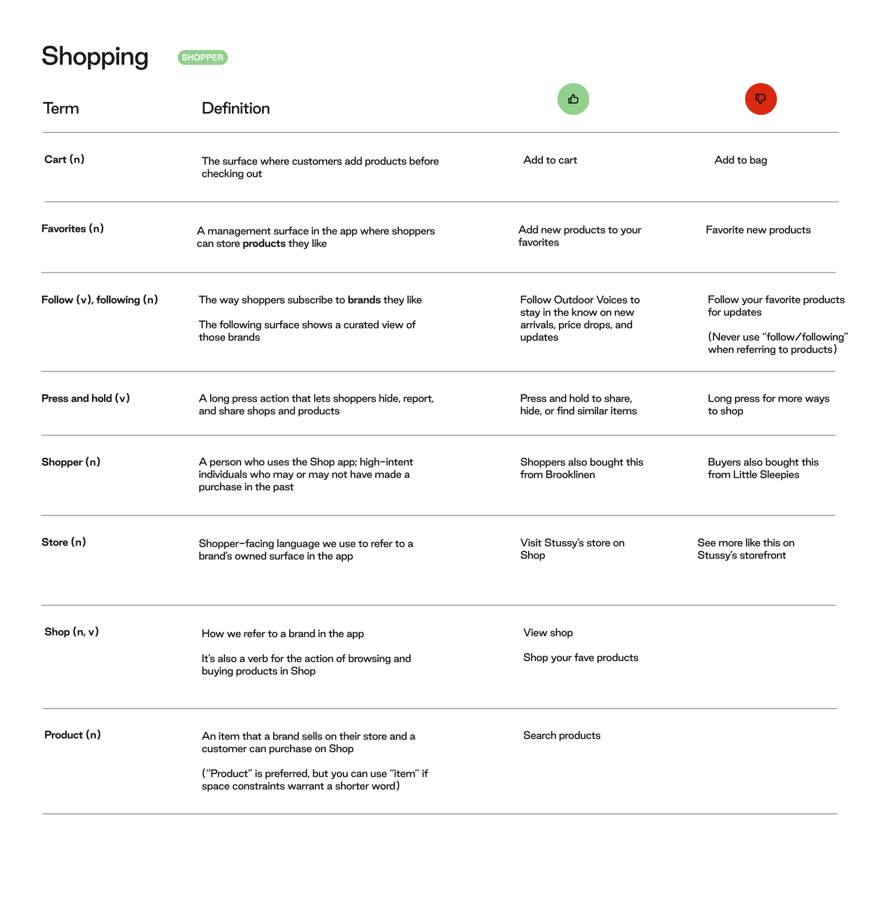
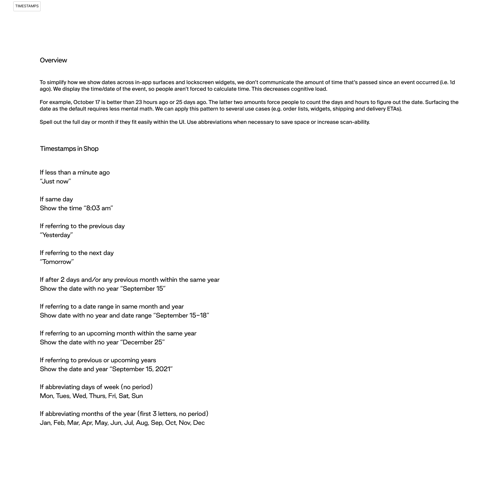

Gravity content system
A voice and tone system that gave Shopify's Shop app one consistent voice across two very different audiences, merchants and shoppers.
The problem space
The Shop app already showed the problem; nobody needed an audit to find it. The same app greeted people one way, apologized another, and celebrated in a third, with order updates, empty states, and error messages all reading like they came from different products. Nobody decides tone should drift, it just happens once more than one content designer is shipping into the same growing surface.
It also had to work for two audiences at once. Merchants and shoppers use different words for the same features, so one system had to speak to both without splitting into two separate voices. On top of that, it had to extend Shopify's existing Polaris design system rather than start from scratch, so every new rule had to fit the foundation Polaris had already set.
To the person using the app, a helpful order update, an apologetic error message, and a totally different voice at checkout didn't read as careful craft. It read as an app that didn't know what it sounded like.
A system every content designer could follow, so whoever opened the app felt like they were talking to one consistent product, not whichever person wrote that particular screen.
The rest is behind a password
The process, the outcomes, and what I learned along the way. Reach out and I'll send it over.
What I worked on
Co-wrote Gravity's documentation with the design system team, component by component. Every component carried its own content guidelines right next to its visual spec, so a content designer, a product designer, or an engineer could check the same page and know exactly how to write for that piece of UI. On top of that, Gravity also carried its own overarching content guidelines, standards that applied across the whole of Shop rather than to any single component.
One of those overarching pieces was a three-point tone spectrum built to replace guesswork with a shared reference: Straightforward, Approachable, Memorable. Order tracking and error messages needed to feel plain and dependable, not playful. Shop Minis and shopping events could afford real personality. Anchoring each point to moments like those meant a content designer never had to guess how formal or how playful a given screen was allowed to be, the spectrum already answered it.

Paired every rule with a concrete Do and Don't, because an abstract principle doesn't survive contact with a deadline. A content designer moving fast needed to compare "Your package is out for delivery" against "There's activity related to your package!" and know instantly which one was Straightforward, not stop to reason it out from a definition. Underneath those tone calls sat a more granular layer, active voice, American spelling, capitalization, contractions, punctuation, the kind of mechanical rule that keeps hundreds of strings consistent even when nobody's actively thinking about tone in the moment.
Several of those mechanical rules point straight back to Polaris's own content guidelines. Building on that foundation instead of inventing a parallel one meant Gravity never contradicted the rest of Shopify's own guidance.

Defined branded terminology for two audiences that use different words for the same feature. A term like "Shop Promise" could get written correctly and still confuse someone, if a merchant managing a store read it the way a shopper would, or the reverse. Writing down the correct usage for each audience, not just a single definition, was what kept a shared feature from sounding like two different products depending on who was reading.


Wrote the reasoning behind each content pattern alongside the rule itself. The timestamp pattern is a good example: show the actual time or date rather than "1d ago," because nobody should have to do mental math to know when something happened. Stating that reasoning meant the pattern could be applied correctly later, by someone who never sat in the room where the decision got made.

What got shipped
Order updates, error messages, empty states, and everything in between started reading like one product. The tone spectrum and its Do/Don't pairs got applied directly to the live strings across the Shop app. The same order updates, error messages, and empty states that used to sound like different products now came from the same three tone points.
It became infrastructure, built into onboarding for every new designer. Gravity was integrated into Shop's design system itself and built into onboarding for every designer joining the team, product and content designers alike. As craft lead for the nine content designers on Shop, it was the shared reference the whole team worked from.
Partnering with the design system team meant content got designed into every flow from the start, not patched in after the fact. Because the writing guidelines lived inside Gravity's own documentation, right next to the visual spec for each component, a product designer saw the content rules the moment they opened a component, not weeks later when a content designer finally got looped in. Content stopped being the thing that showed up after a flow was already designed.
The lesson learned
-
Tone is where the hardest calls actually lived.
Punctuation is a rule settled once and left alone. Tone was the real tension: a declined payment could read Straightforward ("Your card was declined") or lean Approachable to soften it, and picking wrong made the app feel cold, or strangely cheerful about someone's money not going through.
Writing those judgment calls down, with real examples, was the actual point. Now I treat the judgment call itself as the deliverable, the mechanical rule is just a footnote next to it.
-
Pairing every writing rule with a visual one changed where I thought voice lived.
I'd assumed tone lived in the words. Working this closely with visual design showed me it lived just as much in the spacing, the hierarchy, the weight of a button.
On every system I've built since, a content rule without its visual counterpart sitting right next to it is a sign the work isn't done yet, not something to hand off and fix later.
-
Writing the reasoning down is what let this travel beyond Shop.
I didn't set out to build infrastructure. Giving every rule its reasoning, the actual judgment behind it, is what let another team extend Gravity into Collabs, an entirely different product, months after I'd moved on.
On any guideline system I build now, I write it assuming someone will need to extend it without me in the room.
There's always more behind a case study.